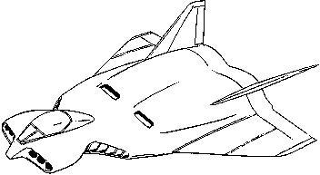

| Fly Manta |
|
|  | |
General and Technical Data |
|
|
Unit type: fighter-bomber Dimensions: overall length 17 meters; overall width 13 meters Weight: 11.7 metric tons Armament: 2 x 3-tube missile launcher; 2 x 40mm machinegun |
|
| Technical and Historical Notes | |
|
A newer strike aircraft to the Federal Forces, the Fly Manta is one of many more recent designs that is gradually losing features of the archaic twentieth century units.
The Fly Manta is a multirole fighter-bomber, intended to be utilized against both air and ground targets. The Fly Manta's large engines and comparitively high thrust-to-weight ratio give it excellent speed, and substantial fuel stores give it a decent loiter time. As an attack unit, the Fly Manta isn't so bad off. The usual quadrule 25mm machineguns have been replaced with two 40mm's. A pair of triple missile launchers serve as the Fly Manta's primary weapon system, and have been recorded as being capable of destroying Zeon mobile suits at close range. Though it is fully capable of attacking ground targets, its low maximum altitude and lack of vertical-attack weaponry make it inferior for hitting well-entrenched enemy forces. Furthermore, it suffers a weak vitality, much like many other Federation aircraft. When high-altitude is necessary, or the attack will be delivered into heavily-defended enemy territory, such operations are best left to the Fly Manta's big brother, the Depp Rog. As a fighter, it isn't quite as maneuverable as the older FF-6 Tin Cod, but its higher attack power make it attractive to Federal fighter aces for fighting mobile suits. |
 RPG quick stats sheet
RPG quick stats sheet